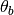

Pix2Sky_Airy¶
-
class
astropy.modeling.projections.Pix2Sky_Airy(theta_b=90.0, **kwargs) [edit on github][source]¶ Bases:
astropy.modeling.projections.Pix2SkyProjection,astropy.modeling.projections.ZenithalAiry projection - pixel to sky.
Corresponds to the
AIRprojection in FITS WCS.See
Zenithalfor a definition of the full transformation.Parameters: theta_b : float
The latitude  at which to minimize the error, in degrees. Default is 90°.
Attributes Summary
param_namestheta_bMethods Summary
evaluate(x, y, theta_b)Attributes Documentation
-
param_names= ('theta_b',)¶
-
theta_b¶
Methods Documentation
-
classmethod
evaluate(x, y, theta_b) [edit on github][source]¶
-